05 : Photos
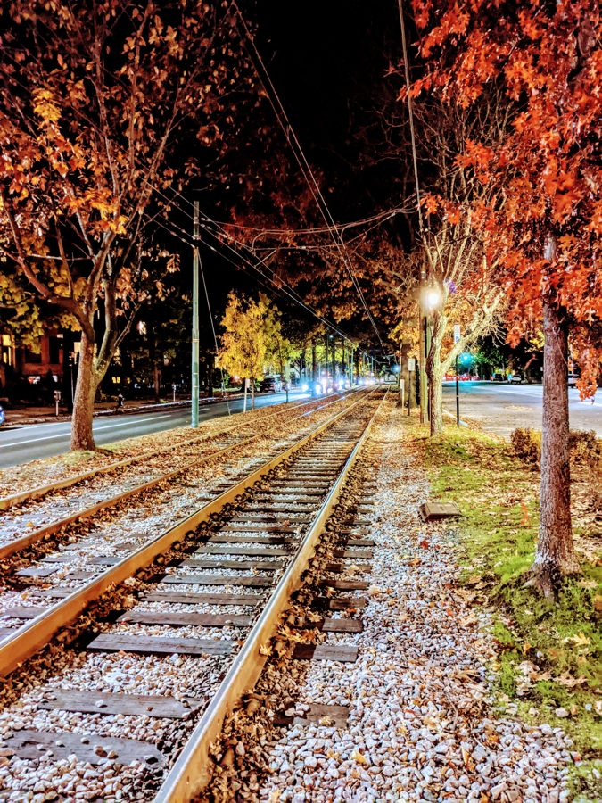
Brookline, MA
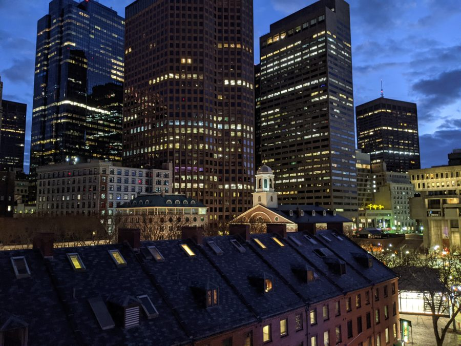
Downtown Boston
Guanajuato, Mexico
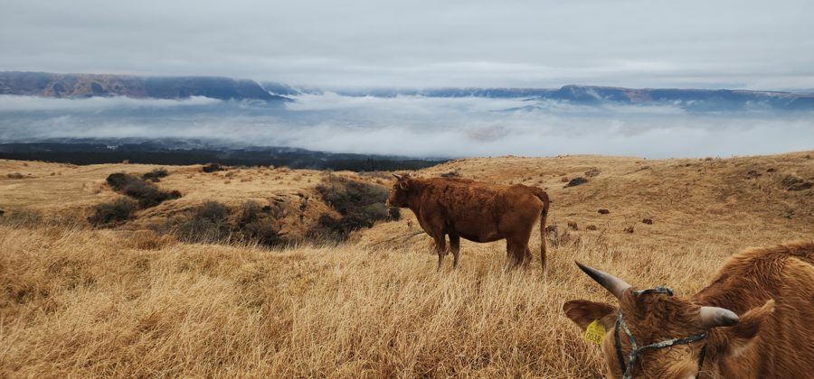
Mt. Aso, Japan
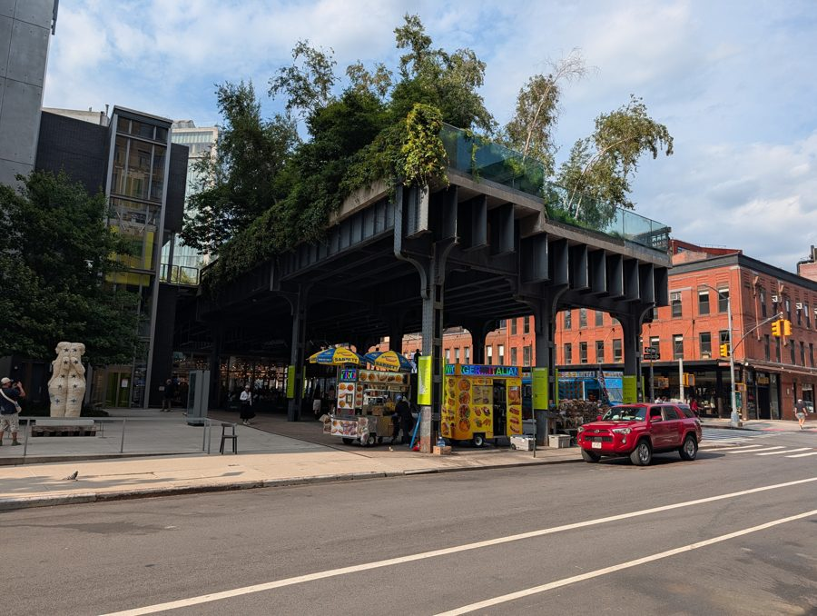
The High Line, New York City
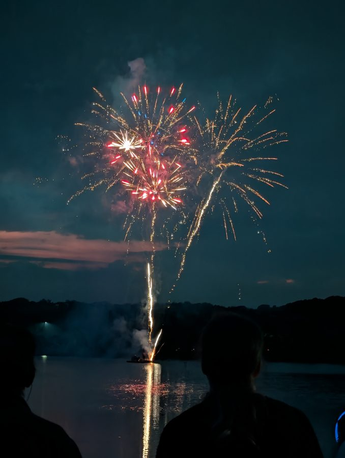
Fireworks
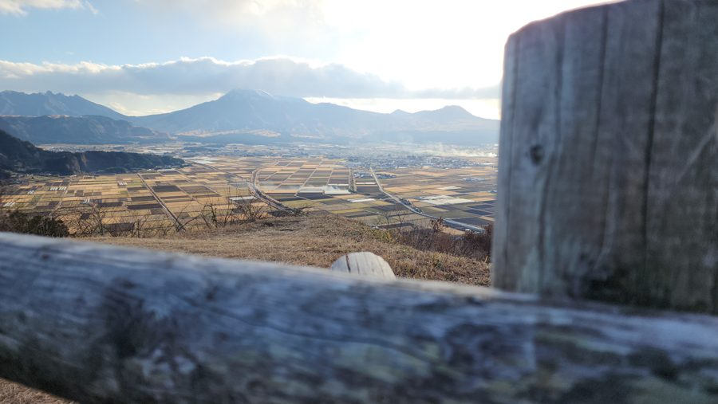
Mt. Aso, Japan
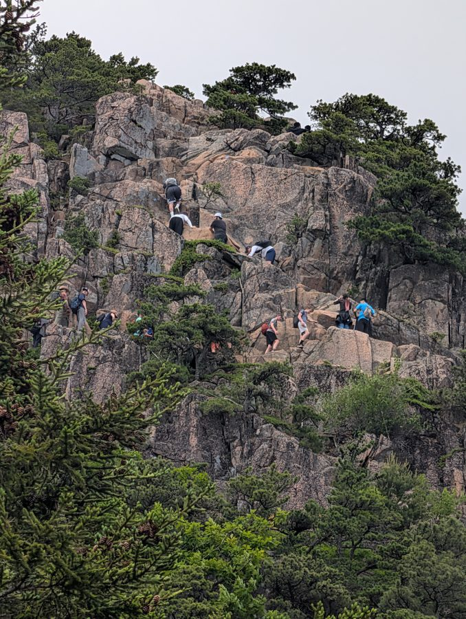
Acadia National Park, ME
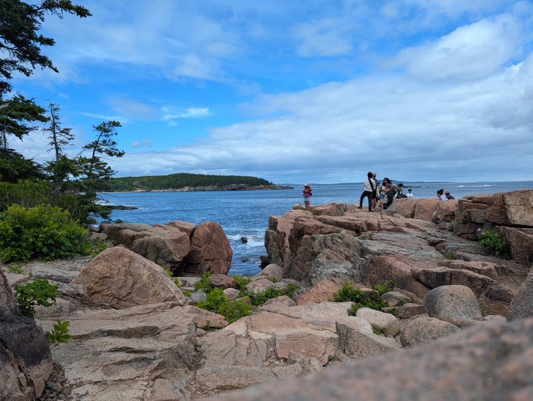
Acadia National Park, ME
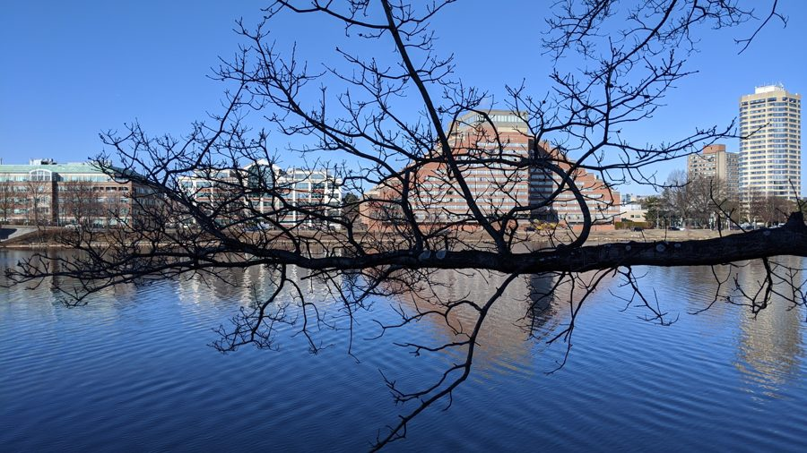
Charles River, Boston
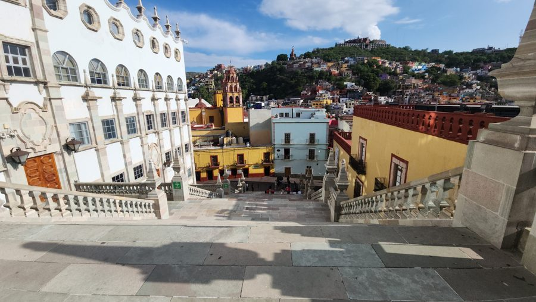
Guanajuato, Mexico
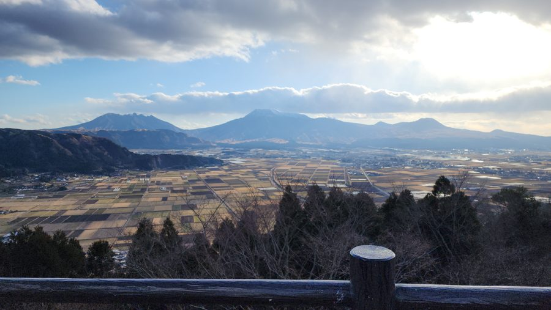
Mt. Aso, Japan